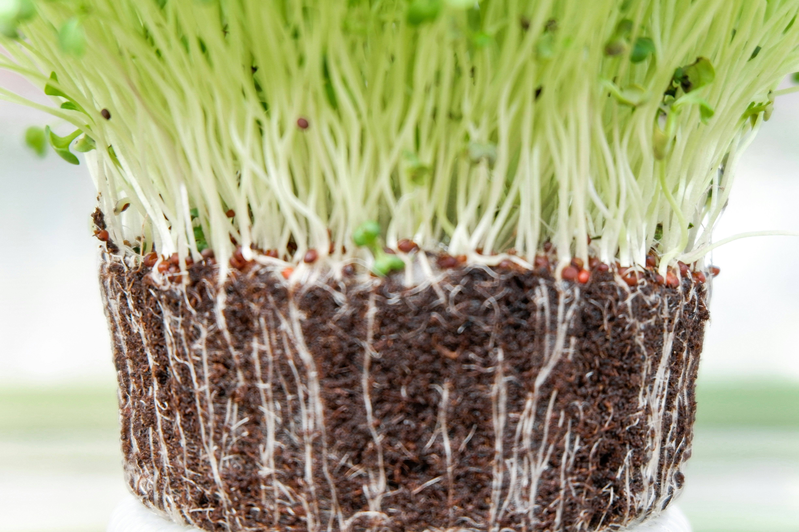
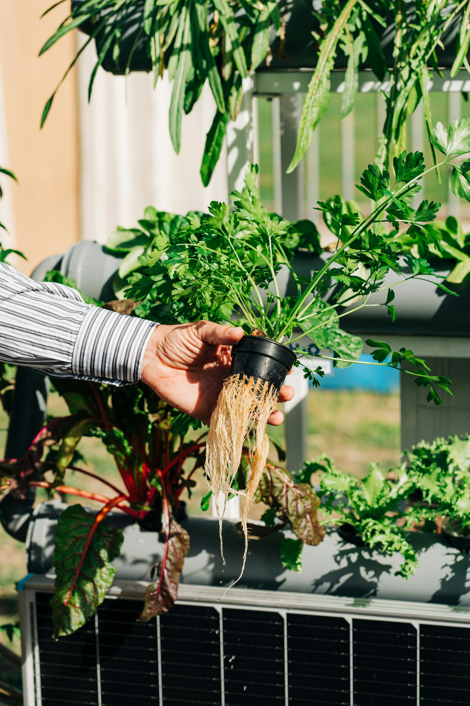

Categorization by Crop Types
- Soil Preparation: Test pH levels and enrich with organic compost.
- Seed Selection: Use high-yield, disease-resistant varieties.
- Planting: Maintain proper spacing for airflow.
- Irrigation: Use drip systems to conserve water.
Tip: Crop rotation prevents soil nutrient depletion.
Seasonal Practices

Winter Care
Techniques for frost protection and greenhouse management.

Summer Irrigation
Optimizing water usage during high-heat months.
Farming Methods & Methodologies

Organic Farming Methodology
Avoid synthetic fertilizers and pesticides. Focus on biological pest control and specialized fertilizers derived from plant and animal wastes.
- Best Practice: Use green manure to improve soil health.
- Tip: Companion planting naturally deters specific pests.

Hydroponics & Vertical Farming
A method of growing plants without soil by using mineral nutrient solutions in a water solvent. Perfect for urban farming and limited spaces.
- Best Practice: Monitor water pH levels daily.
- Efficiency: Uses up to 90% less water than traditional farming.